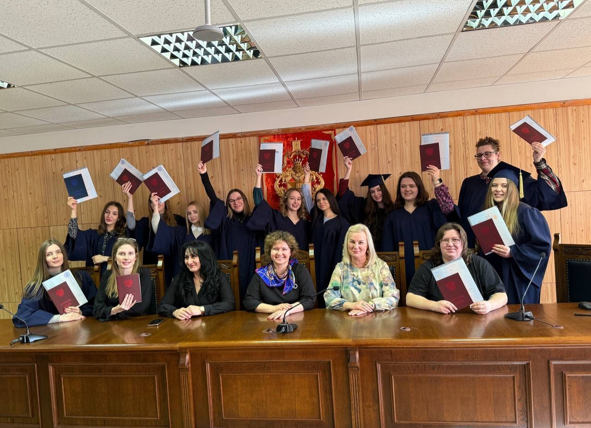
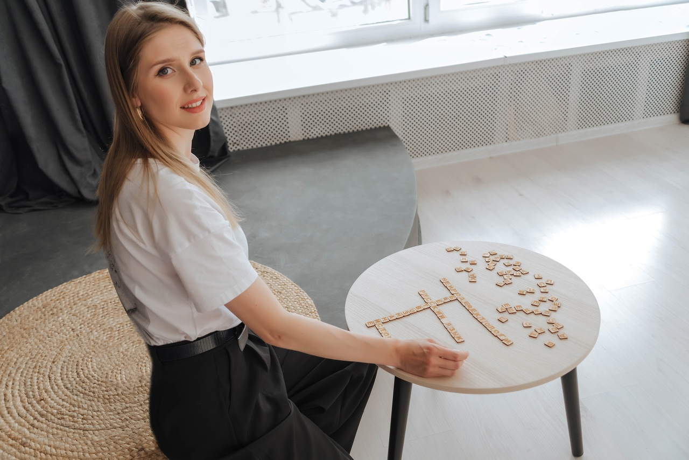

До курса Полина Алексеевна, репетитор по русскому языку, зарабатывала 120 тыс. рублей в месяц, работая индивидуально с 20 клиентами. Много сил и времени уходила на работу с разными источниками привлечения учеников. После курса она смогла набирать учеников из ВК в групповой формат обучения, что помогло ей увеличить доход в 3 раза.
Мы взяли у нее короткое интервью:
— Полина, расскажи, что было до курса, какой средний доход был в месяц? Сколько клиентов?
— До курса доход в месяц был в среднем 120 тысяч рублей. Клиентов – около 20. Работала по 17 ак.ч. в неделю.
— А как находила клиентов? Трудно они тебе доставались?
— До курса клиентов находила, где только можно: сарафан, Авито, Вк, Юла, Шикари, Профи.ру, партнёрская программа с коллегами. Везде по чуть-чуть.
Клиенты были всегда, но приходилось тратить много времени на работу с таким большим количеством каналов привлечения.
Ещё не стоит забывать и о финансовых рисках. Ведь можно вложить деньги в продвижение на Авито, а клиенты не придут. Площадка сложная, её далеко не всем удаётся освоить.
На Профи.ру или по партнёрской программе иногда было так, что я, оплатив большую комиссию, отпускала клиента, потому что мы не сработались.
— Какие сложности были во время обучения на нашем курсе? Насколько сложно было учиться? За сколько прошла обучение?
— Так как мне хотелось поскорее запустить ВК, иногда я сдавала по пять домашек в день. Первый раз курс прошла за 28 дней. Сложнее всего далась настройка таргета и поиск рабочих связок.
Очень понравилось, что задания построены от простого к сложному. Есть видео, конспект и скриншоты, на которых выделено каждое действие и подписана каждая кнопка. Разжёвано в кашку. И главное, что меня подкупило – нет пустых обещаний со стороны организаторов курса. Сама работаю с учениками по такому же принципу.
— Каково было работать с куратором, что было полезно, мотивировало ли это тебя? Как считаешь, без куратора получилось бы так же?
— Сложно сказать. Татьяна порой давала классные идеи. Но думаю, что если человек сильно замотивирован, он справится и без куратора. Если человек купил курс и откладывает его прохождение на потом, куратор не поможет. В конце концов, он же не выполнит работу за вас. Тем более есть поддержка чата, где опытные "атлане" помогают только что пришедшим новичкам.
— Какие сейчас действия делаешь для привлечения клиентов? Как часто пишешь посты? Запускаешь ли рекламу?
— Весной много публиковала и на личной странице, и в группе. В этом помог курс Пиши-Огонь-Посты, который купила сразу же после прохождения Вк-бабло.
Рекламу пробовала запускать несколько раз, но этим нужно заниматься постоянно. Мне на всё времени не хватает. На новую заявку нужно быстро ответить. Каждой маме подробно рассказать, как проходят уроки, помочь во всём разобраться, что-то посоветовать.
Общению с новыми клиентами я научилась на курсе Вк-бабло.
Когда весной пошли первые заявки с постов, стало особенно сложно. Конец учебного года. На носу ОГЭ и ЕГЭ по русскому языку. А ведь я ещё и в школе работаю!
Весну доработала. Летом уроки не вела, отдыхала.
Вы когда-нибудь встречали репетитора, который может себе позволить не работать целых три месяца?
Я смогла, благодаря курсу Евгении Брун.
Но все три месяца шла запись на новый учебный год.
На созвон по видео приходили мамы учеников и говорили:"Полина Алексеевна, я наблюдаю за Вашей страницей. Мне так нравится! У Вас замечательные тексты, так хорошо пишете. Мы хотим, чтобы Вы научили писать моего ребёнка так же!"
Записывались ученики, которые говорили, что на моей странице всё понятно, не нужно искать по закромам какую-то информацию. Всё понятно, вызывает доверие.

Потом стали писать коллеги, которые отправляли слова восхищения. Спрашивали, сама ли веду ВК. Всем отвечала, что веду страницу и группу сама. Говорила, что прошла обучение у Евгении Брун, давала ссылку на курс.
Многие преподаватели стали писать в личку и предлагать рекламировать их за деньги) Я отказалась.
Несколько человек скопировали себе оформление и тексты из описания группы, услуг, постов. Неприятно, конечно, но это же показатель!
А на одном из созвонов в клубе курса сама Евгения про мой пост сказала:"Ощущение, что этот текст писал копирайтер".
Сейчас посты пишу достаточно редко. Раз в 1-3 недели. Рекламу не запускаю. Начался новый учебный год. Мне не до этого. За лето смогла набрать 6 групп учеников. Нужно готовиться к экзаменам!
— А можешь поделиться, как изменилась жизнь, когда увеличился доход? Может что-то купила себе? Съездила в путешествие? Что-то смогла сделать, чего раньше не могла позволить себе) Ну кроме того, что целых три месяца позволила себе отдохнуть?
— Первый раз за 12 лет съездила на море с семьёй! Смогла воспользоваться дорогостоящими платными медицинскими услугами.
В этом учебном году уменьшила нагрузку. Пока работаю 12 ак.ч. в неделю. Больше 16 ак.ч. брать не планирую. И у меня теперь три выходных!

— Все, остался только вопрос, сколько сейчас зарабатываешь? Сколько в среднем в месяц? Сколько клиентов? А вот примерно сколько за год было прошедший заработано?
— Сейчас сложно сказать, сколько выходит в среднем в месяц. Учителя живут не календарным, а учебным годом. А в этом году прошел месяц только один. Но вот за сентябрь вышло 188 тысяч рублей. Учеников чуть больше 20. За прошлый учебный год было заработано 1 101 470 р.
— А если сравнивать с периодом, до ВК-Бабло? Насколько выросла?
— Там не получится сравнить, думаю. Есть много нюансов. В сентябре 66 600, в октябре 116, в ноябре 145, дальше – 116-140 в зависимости от месяца. В январе, естественно, меньше, так как там каникулы. Декабрь и февраль больше, так как там приходили точечно на подготовку к допуску на ОГЭ/ЕГЭ.
Давай возьмем показатель сентября прошлого года и этого.
У нас-репетиторов ниша своеобразная. У мастеров проще посчитать. Вот доска. Вот она стоит столько рублей. В том месяце продал 5 досок. В этом – 10)
У нас считается "человекочас". В прошлом году у меня было три группы, остальное – индивидуалки. В этом – пока только группы, осталось 4 свободных окна всего.
— То есть в 23 году в сентябре было 66000 рублей, а в 24 году 188000 рублей? Получается рост в 3 раза?
— Да, так и есть.
— Спасибо большое, очень радуют твои результаты. И приятно было получить твою обратную связь.